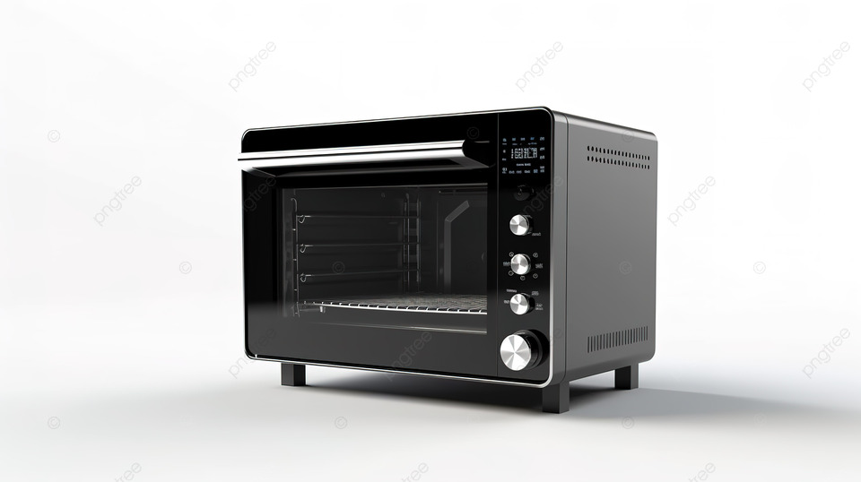
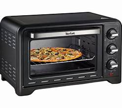
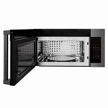
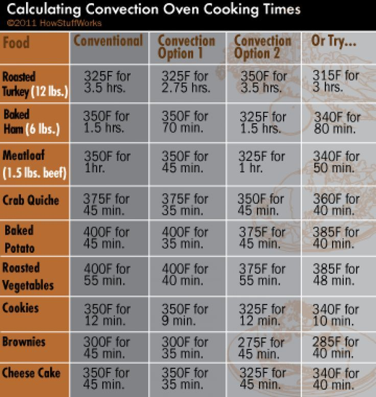

This image shows the exterior of a microwave oven. The appliance is designed to heat, cook, and defrost food quickly using microwave technology. Its compact design saves kitchen space. The control panel allows easy operation and settings adjustment.
This image displays a microwave oven being used to cook food. The enclosed chamber ensures even heating while reducing cooking time. It provides a convenient way to prepare meals quickly. The appliance is commonly used in homes and offices.
This image shows the inside of the microwave oven. The rotating tray helps distribute heat evenly, ensuring food is cooked properly. The interior is easy to clean and maintain. Its design supports efficient and safe cooking.
This image presents a microwave cooking chart containing recommended temperatures and cooking times for different foods. It helps users prepare meals safely and efficiently. The guide improves cooking accuracy and consistency. It is useful for both beginners and experienced users.